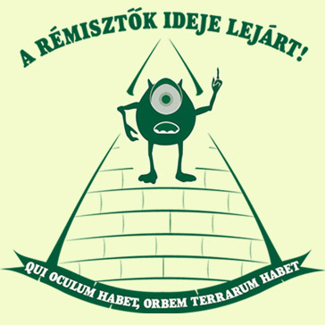

Vagyunk itt páran, akik
2006-ban lelkesen segítettük a Zöld Pártot a hatalomranemjutásban. Vicces volt: telematricáztuk az
egész országot, kitranszparenseztük magunkat a Lánchídra, jelöltük Berta kutyát képviselőnek,
kentünk tortát Demszky pofájába, és megverettük magunkat Pokorni Zoltán cigány haverjaival. Horn
Gyulát végül nem fújtuk le poroltóval, lelepleztünk viszont több súlyos választási csalást, és élő
egyenesben közvetítettük, ahogy az OVB és a köztársasági csőrmester szemet hunynak fölötte. A végén
kiderült, hogy az emberek már bárkire szavaznának, csak ne a bejáratott pártok legyenek azok, de
előre le van vajazva minden, és ezért nincs változás.
Persze a Zöld Párt nem szűnt meg, csak
csendben van. Alulról ássa a rendszert szorgalmasan. Azok, akik azt hitték, hogy ezt a pártot én
vezetem, vagy bármi közöm van hozzá azon kívül, ami 2006-ban történt, nagyon tévednek. Nálam
komolyabb emberek állnak mögötte. A Zöld Párt mostanra igen kiterjedt, országos szervezetté vált,
ami nem is csoda, hiszen idestova 15 éve ezen dolgoznak, türelmes emberekkel, akik két lábbal állnak
a földön, és tudják, hogy tüntetgetéssel nem mennek semmire. A rendszer borulni fog, csak idő
kérdése. Más pártok a közvélemény-kutatások indexeit vizslatják, a ZP viszont a lehetőségeket.
Honnan volt ereje az SZDSZ-nek egy országot gúzsba kötni? Talán sokan szavaztak rá? A túrót. Viszont
sok pénzük volt, hála a Strabagnak és Soros Györgynek. Ebben az országban minden eladó, de nem
helyre kis ikszekért a szavazólapon, hanem guruló dollárokért.
De hát hol van az leírva, hogy csak a zsidóknak szabad hálózatokat építeni és
kapcsolatokat keresni? Jó reggelt, birka nép, ilyet nekünk is lehet. És van, aki már csinálja, csak
segíteni kell néha. Ezért láttam fantáziát inkább a Zöld Pártban, mint a Jobbikban. Teljesen
felesleges a médiában hajcihőzni, látványosan nyilatkozgatni és elhatárolódgatni, mert ezek csak
súlytalan külsőségek.
A Zöldek most megint előjönnek
egy kicsit. Meg kell ugyanis mutatni, hogy van mozgósító erőnk, még ha nem is használjuk mindennap.
A háttérből pedig valakik figyelnek, és ha jól csináljuk, lesz továbblépés is. Egy országos
aláírásgyűjtő akcióval kezdjük. Az OVB hitelesítette a Zöldek kérdését, ami a következőképpen
szól:
"Egyetért-e Ön azzal, hogy az országgyűlési képviselőknek csak a
bizonylattal alátámasztott, elszámolható kiadásai után járhat költségtérítés?"
Ugye, milyen pártsemlegesen vállalható,
kissé talán populista, de kétségkívül támogatandó és helyes felvetés? Nos, erre kell legalább 200
ezer aláírást összeszednünk augusztus 19-éig. Önkénteseket keresünk, akik eljönnek, és segítenek
Budapest és más városok utcáin megszólítani a járókelőket. Nem nagy ügy: 200 ezer aláírást egy ilyen
népszerű kérdésben 100-150 aktivista néhány hét alatt összeránt. Ezt a kérdést nem kell magyarázni
senkinek. Egyébként is itt a nyári szünet, mindenki ráér. Ha bizonyos körök látják, hogy ezt a
"belépő szintű" feladatot meg tudjuk oldani, segítenek, hogy emeljük a tétet. 2010 még odébb van, de
addigra beérhet a vetés.
Aki szeretne részt venni velünk a budapesti aláírásgyűjtő
kampányban, jelentkezzen e-mailben. Két-három fős csapatokban hetek alatt sikerre vihetjük a
kezdeményezést. Az akció résztvevőit természetesen étellel-itallal ellátjuk tevékenységük alatt.
Vidékiek jelentkezését is várjuk. Aki részt venne ebben, írjon levelet a
csapat@zoldpart.hu címre, és küldje
el adatait, nevét, telefonszámát. Köszönjük.